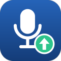

S26 녹음 백업
S26 Recording Backup · 개인용 안드로이드 앱
갤럭시 휴대폰에서 삼성 전화 앱과 음성 녹음 앱이 저장한 녹음 파일을 사용자 본인의 Google 드라이브에 자동으로 백업하는 개인용 앱입니다.
하는 일
- 새 통화 녹음·음성 녹음이 저장되면 감지해 Google 드라이브의 지정 폴더에 원본 그대로 올립니다.
- 녹음 날짜 기준으로 연도·월 폴더를 만들어 정리합니다.
- Wi-Fi만 사용하거나 모바일 데이터도 사용하도록 고를 수 있습니다.
하지 않는 일
- 별도 서버가 없습니다. 녹음은 휴대폰에서 사용자의 드라이브로 직접 전송되며 개발자나 제3자에게 전달되지 않습니다.
- 이 앱이 만든 폴더·파일 외의 드라이브 파일에는 접근하지 않습니다.
- 녹음 내용을 분석·전사·요약하지 않습니다.
This is a personal Android app that backs up the user's own Samsung call and voice recordings to the user's own Google Drive. There is no server; data goes directly from the phone to the user's Drive.